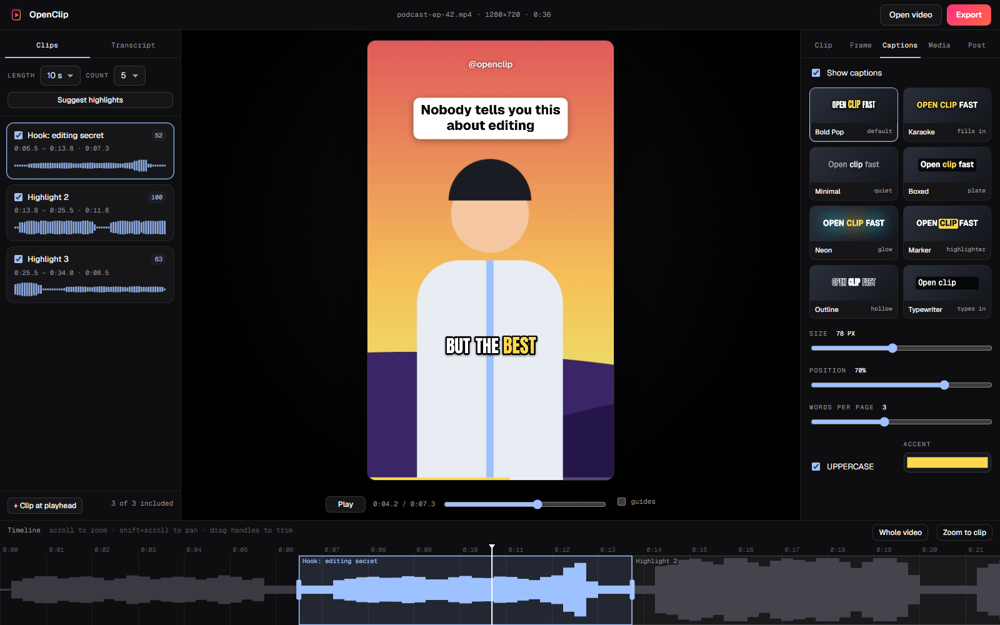
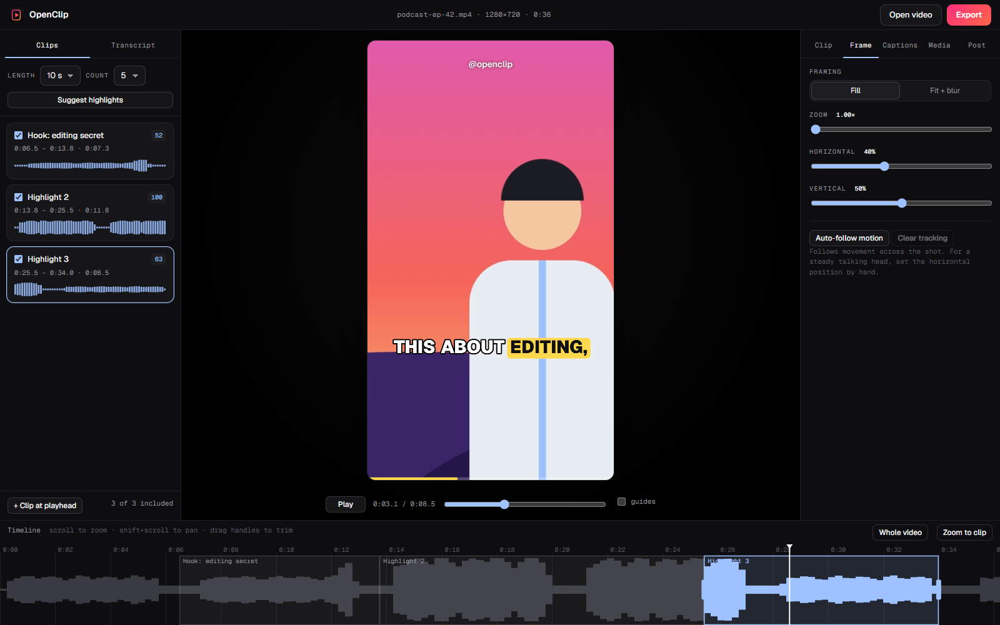

OpenClip
Long video. Short clips.
Bring in a long recording, choose the moments worth sharing, and export vertical clips with readable captions. You keep control of every cut, and the video stays on your computer.
No account, no card, no install. Open the app, drop in a video, and your clips are minutes away.
- 01 · Bring it inStart with a long videoUse a local video file
- 02 · Shape itChoose the best momentsChange the cut and captions
- 03 · Share itExport vertical clipsReady for the places you post


The idea
What OpenClip is
Open a local video. OpenClip listens for lively moments, then gives you an editor to change the timing, framing, captions and look.
Keep the suggestions you like and change the rest. Your source video and exported clips never leave your device. Optional transcription runs on your own machine too.
Capabilities
What it does
- Find the moments
- Start with suggested highlights from a long recording, then choose the moments that fit your audience.
- Frame it for vertical
- Fill the frame or fit it over a soft backdrop. Zoom and pan by hand, or let auto-follow track movement across the shot.
- Show every word
- Word-by-word captions in eight visual styles, with control over size, position and accent colour.
- Make your own transcript
- Generate word-timed captions with Whisper on your own device, or bring in an .srt or .vtt file.
- Polish the clip
- Adjust timing, add music and overlays, and open with a hook card to stop the scroll.
- Pick up where you left off
- Project edits are saved locally so you can return to a clip.
- Export clean files
- 1080 × 1920 clips with captions burned in, plus a matching subtitle file.
Where your material goes
Your data, on your terms
Stays in your browser
- Original video
- Clip editing and framing
- Captions on the video
- Finished exports
- Saved projects
Connections you choose
- A speech model is downloaded once, only if you turn on transcription, and then cached
- Page fonts load from Google Fonts
There is no server to upload to, no account and no analytics. Audio for transcription is processed on your device.
Before you open it
What you need to know
A desktop Chromium browser such as Chrome, Edge, Brave or Opera. Export relies on features those browsers provide.
None. There is nothing to install and no sign-in.
Local files. H.264 MP4 and WebM are the safest bet; other codecs depend on your browser.
Clips render in real time, so a 30-second clip takes about 30 seconds. Keep the tab visible while it exports.
Current limits
Know before you start
- No YouTube import. Browsers can't download from YouTube, so OpenClip works with video files you already have.
- Suggested highlights come from the audio: they find lively moments, not meaning. Treat them as a starting point.
- Auto-follow tracks motion, not faces. For a steady talking head, a manual position is often better.
- Very large files may be limited by your computer's memory.
Price
$0, forever
No payment, no trial and no watermark. OpenClip is released into the public domain under the Unlicense, so you can use it, change it, host it yourself and ship it however you like.
- OpenClip, free to use and free to modify
- Local clip editing, captions, framing and export
- Optional on-device transcription
- Plain static files you can host anywhere
Get started
Open OpenClip
It opens right here in your browser. Drop in a video and the suggested highlights appear when the audio has been analysed. Your projects are kept on this computer.